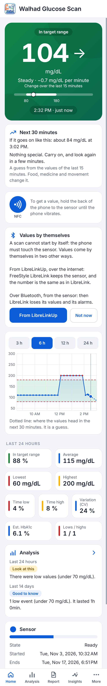
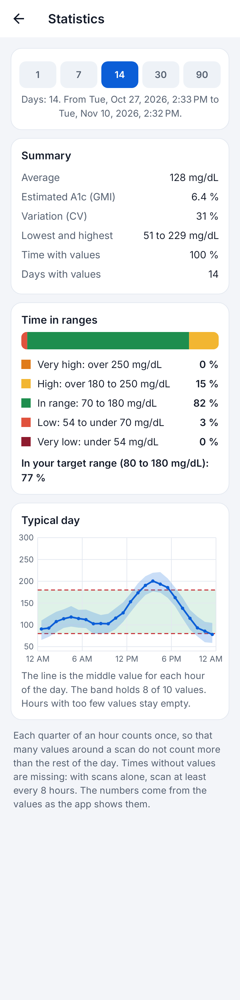

Instant Sensor Scanning
Scan your FreeStyle Libre sensor using your Android phone and instantly view your glucose value, trend direction, and reading time.
Monitor your FreeStyle Libre glucose readings, receive timely alerts, explore glucose trends, and share meaningful health information — all from your Android phone.

Everything you need to understand and manage your glucose information in one convenient application.
Scan your FreeStyle Libre sensor using your Android phone and instantly view your glucose value, trend direction, and reading time.
Receive glucose readings automatically through supported LibreLinkUp or Bluetooth integrations.
Receive timely warnings when glucose levels approach low thresholds, with vibration and spoken notifications.
Explore your glucose history, daily patterns, time in range, and 14-day statistics.
Generate structured PDF reports containing glucose readings, trends, and useful statistics to share with healthcare professionals.
Your glucose information stays on your device by default. Optional online features remain under your control.
Explore the application interface and discover how simple glucose monitoring can be.



Download and install Walhad Glucose Scan on your Android device.
Use the supported sensor scanning or configured data connection features.
View glucose readings, follow trends, and access available reports and alerts.
Built around the sensors and phones it was verified with — nothing more is claimed.
The phone you already carry reads the sensor, follows the trend and keeps the history. Nothing else has to be bought, and no reader has to be carried.
Readings and warnings can be spoken aloud by the phone — in the language you think in.
Full interface, spoken values and spoken warnings.
Spoken values and spoken warnings in Somali.
قيم الجلوكوز والتحذيرات تُقرأ بصوت عربي.
Walhad Glucose Scan is designed to keep your information under your control. Nothing leaves the phone unless you switch an online feature on yourself.
Local by default.
Online only by your choice.
Discover a simpler way to view, understand, and monitor your glucose readings.
Download Walhad Glucose ScanImportant. Walhad Glucose Scan is not a medical device and is not intended to replace official glucose monitoring applications or professional medical advice. Keep LibreLink and its official alarms enabled. Never change insulin, medication, or treatment based solely on information displayed by this application.
The online features (LibreLinkUp values, the AI explanation and the online copy) were built and tested with simulated services rather than actual live services.